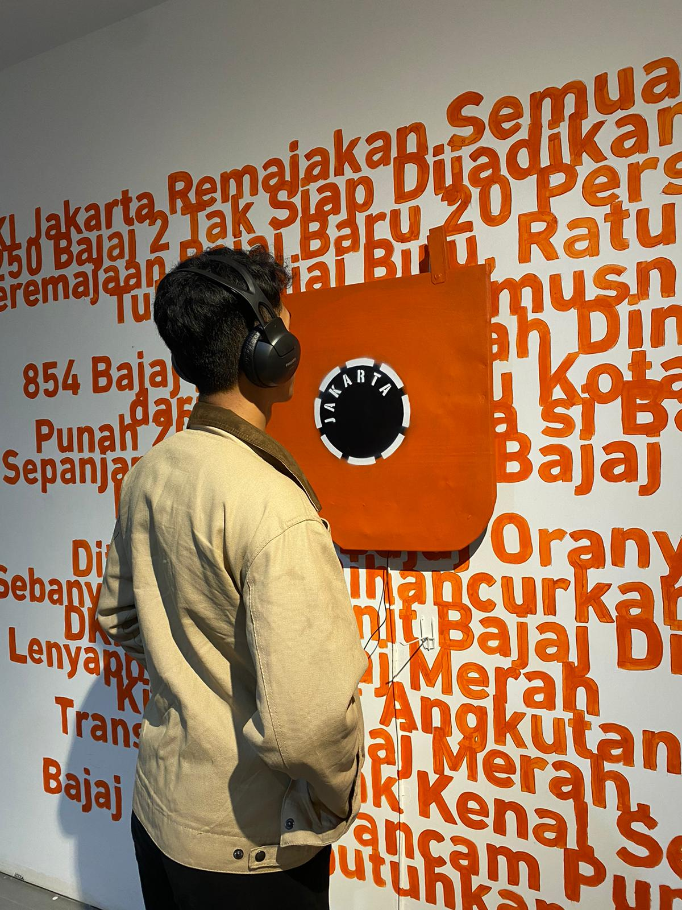
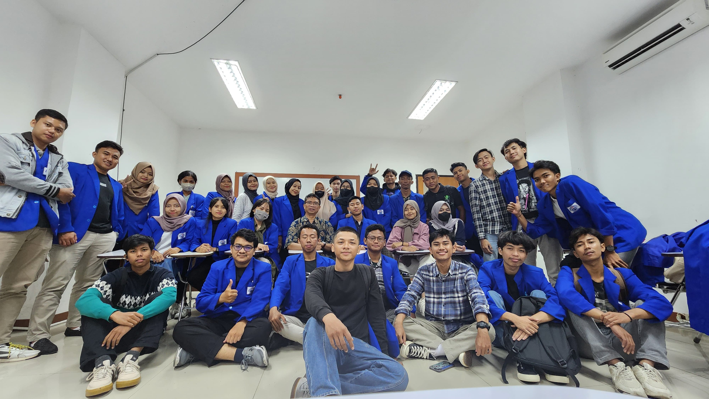
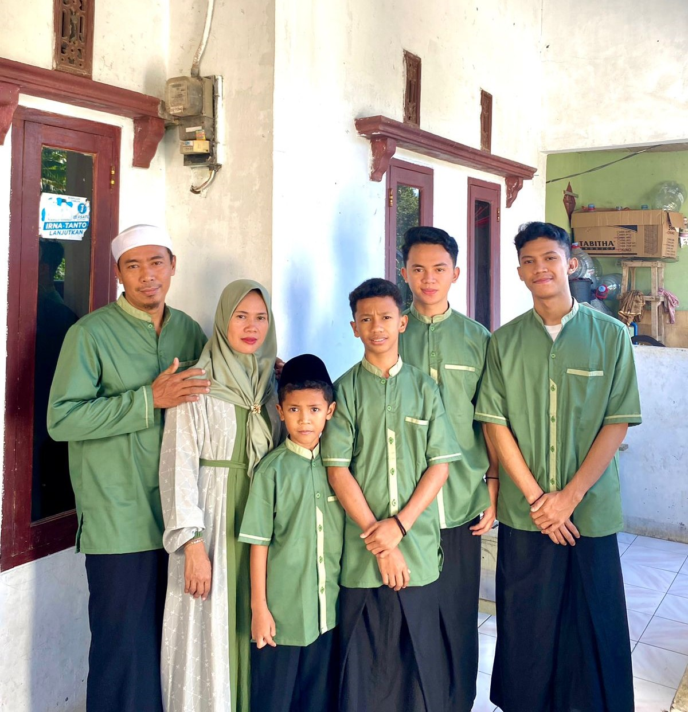

Halo, saya Gilang
Saya ingin menjadi seorang programmer dan sedang menempuh pendidikan di Universitas Pelita Bangsa.
Saya adalah ke 1 pertama dari 4 bersaudara. Dan ibu ku orang tercantik yang ada dikeluarga saya

Campus friends
"Pejuang skripsi itu bukan siapa yang paling pintar, tapi siapa yang paling berusaha.
Sama seperti halnya pejuang akad, bukan siapa yang paling kaya melainkan siapa yang paling siap."

My Familiy
"Nikmati hal-hal kecil dalam hidup karena suatu hari Anda akan melihat ke belakang dan menyadari bahwa itu adalah hal-hal besar."
"Rumah bukanlah tempat melainkan perasaan."